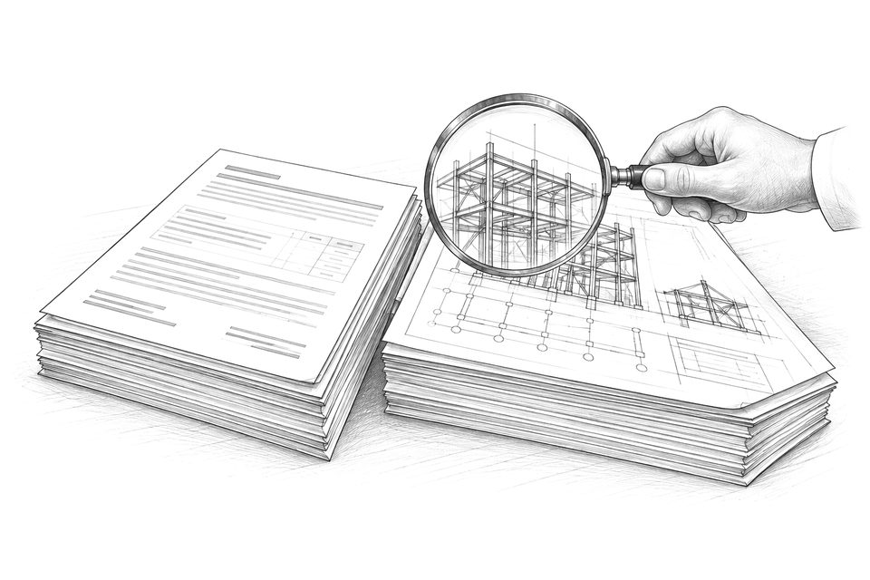
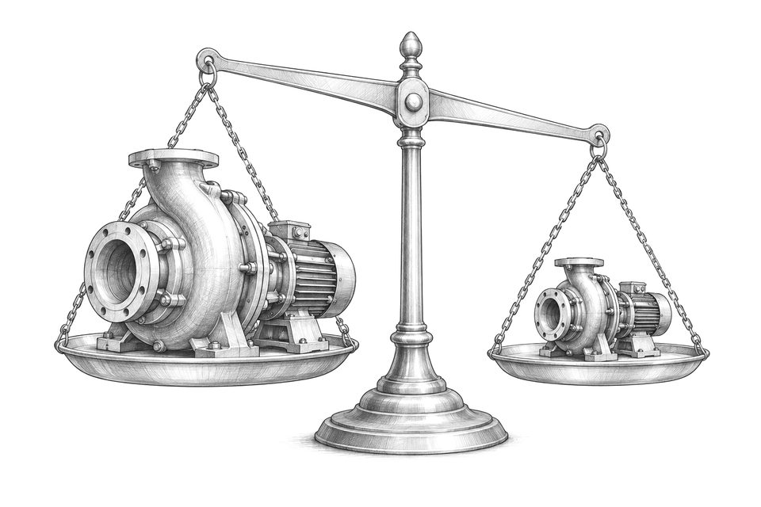
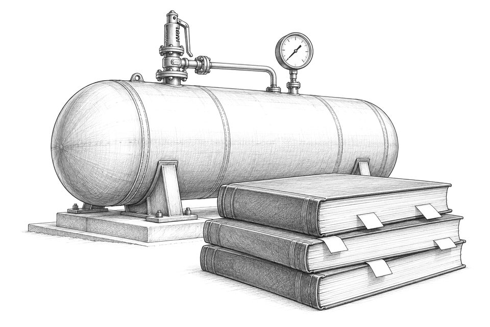
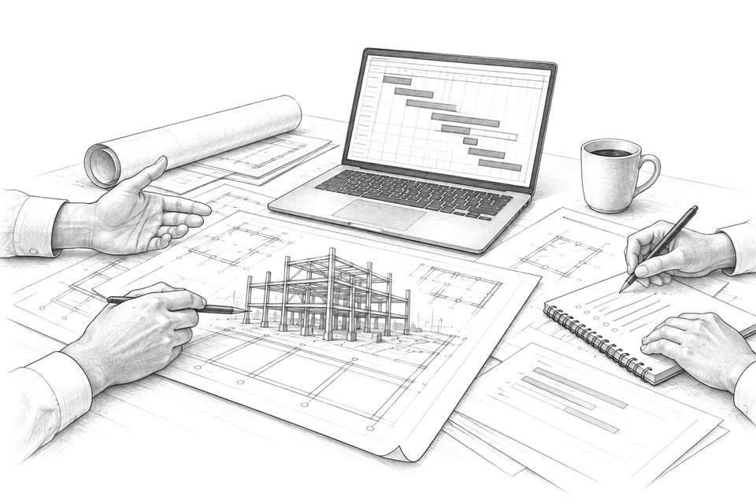
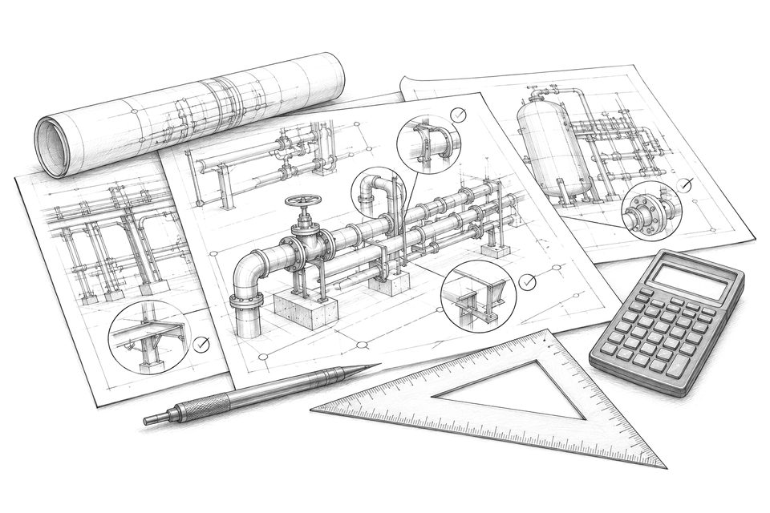
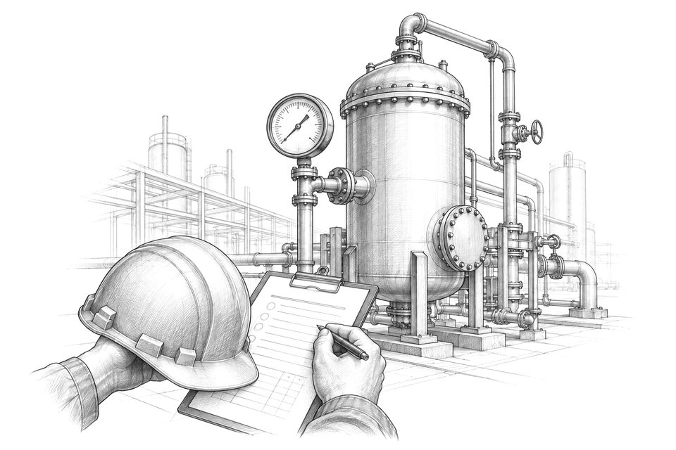
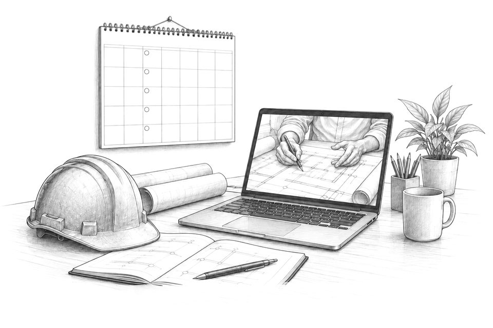
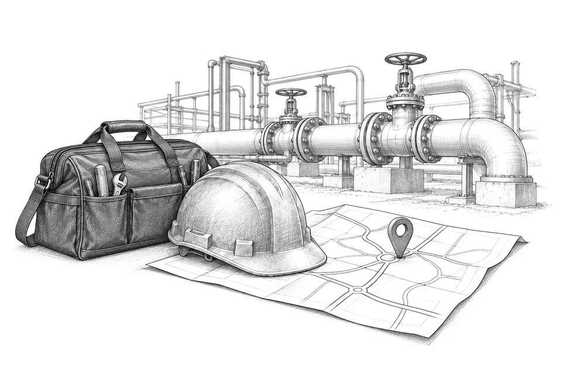

「この見積・設計書、妥当？」
メーカーの設計書や見積内訳を、社内で判断できない。
OWNER'S ENGINEERING / TECHNICAL ADVISORY
プラントを「作る側」ではなく「発注する側」に立ち、メーカー・EPCコントラクターと向き合う支援です。
専任技術者を雇うほどではないものの、設計書や見積の妥当性を判断できる人が社内にいない。その隙間を埋めます。
発注者側の技術論点を整理し、メーカー・EPCとの折衝を支援します。
発注者側で不足する技術判断を、案件に必要な範囲で補います。

メーカーの設計書や見積内訳を、社内で判断できない。

過剰か適正か、比べる物差しがない。

ガス事業法・高圧ガス保安法が絡む設計検討。
NOTE許認可手続・保安管理業務そのものは、事業者および有資格者の業務です。当社はその前段の技術検討と、メーカー・EPCとの折衝を支援します。
設計・調達・工程・検査を横断し、発注者の意思決定を補佐します。

週次定例で論点を整理し、意思決定を補佐。

図面・計算書・見積にコメントし、VEを提案。

検査要領の確認から立会い、指摘のフォローまで。
常駐ではなく、週次定例と図書レビューを軸に、必要な場面で関与します。

月間上限時間の準委任。週次のオンライン定例と、図書の非同期レビュー。

図書レビューや検査立会いを単発で。現地へは必要な場面のみ伺います。
 REVIEW / NEGOTIATION / REPORT
REVIEW / NEGOTIATION / REPORT
代表は大手エンジニアリング会社（EPC）で、設計と見積を作る側にいました。見積のどこに設計余裕が含まれるかを把握しているのは、作成する側にいたためです。
在籍中・受託業務で知り得た個別情報は守秘義務の対象であり、他の案件に流用することはありません。受託実績の案件名も同様に非公開です。
業務範囲の例：LNG受入基地・付帯設備の基本設計/詳細設計レビュー、ベンダー見積の技術評価、試運転計画の策定と現地立会い。
作る側の13年と、発注する側の2年。両方の視点で設計図書と見積を読みます。
大手エンジニアリング会社で13年間、プラントの機械設計・建設・試運転に従事。主にLNG受入基地・熱量調整設備・BOG昇圧設備を担当。ガスの圧縮・熱交換・物性管理に関わるプロセス機械が専門。地熱発電プラントのエンジニアリングマネジメントも経験。
事業会社側で2年間、バイオマス新規燃料開発、事業性評価（FS）・キャッシュフローモデル作成、EPC向け購入仕様書の作成に従事。発注者としてメーカー・EPCと向き合う実務を経験。米国FE試験合格。